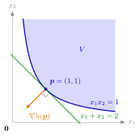

Let N∈N, let D⊆Rn be an open convex set, let hk:D→R(k=1,…,N) be quasi-convex differentiable functions, and let
V={x∈D:hk(x)≤0,k=1,…,N},
which is a convex set. For p∈V, let Cp be the set of nonnegative linear combinations of the gradients of the constraints that are active at p, that is, with hk(p)=0:
Cp={k=1∑Nλk∇hk(p):λk≥0,λk=0 if hk(p)<0}.
Then:
(a) For every p∈V,Cp is a closed convex cone, generated by {∇hk(p):hk(p)=0}.
(b) If hk(p)<0 for all k=1,…,N, then Cp={0}.
(c) If Cp={0}, then for every a∈Cp∖{0} the hyperplane Ha={x∈Rn:a⊤x=a⊤p} is a supporting hyperplane of V through p, and a⊤x≤a⊤p for all x∈V.
The gradient of an active constraint hk at p points to where hk grows, which is out of V. Any nonnegative mix of these outward gradients is the normal of a hyperplane through p with all of V on the other side. The geometric search for supporting hyperplanes becomes a computation of gradients.

The figure shows Example 2 below, with h(x)=1−x1x2. At p=(1,1) the constraint is active and ∇h(p)=(−1,−1) points out of V, towards smaller x1x2. The line through p with this normal is −x1−x2=−2, that is, x1+x2=2; it touches the curved boundary at p, and all of V lies on the side x1+x2≥2, as part (c) of the theorem predicts even though h is not convex.
The proof rests on one fact: if h is quasi-convex and differentiable on the open convex set D and h(x)≤h(p), then ∇h(p)⊤(x−p)≤0. The sublevel set{h≤h(p)} is convex, so h does not exceed h(p) on the segment from p to x, and the directional derivative at p in the direction x−p cannot be positive. Quasi-convexity is what makes V convex and this step work; without it a gradient can give a hyperplane that cuts through V (Example 3 below).
The theorem gives supporting hyperplanes, not necessarily all of them. In the language of the normal cone, it says Cp⊆NV(p). The inclusion can be strict for nonlinear hk, for instance when an active gradient vanishes (Example 4 below). For convex differentiable hk, the Slater condition (a point x∗∈V with hk(x∗)<0 for all k) is a condition under which every supporting hyperplane through p arises this way; for linear constraints this always holds.
Under the hypotheses above, Cp is a closed convex cone generated by the gradients of the active constraints; it is {0} when no constraint is active, and every a∈Cp∖{0} is the normal of a supporting hyperplane of V through p with a⊤x≤a⊤p on V.
If hk(p)=0 and ∇hk(p)=0 for some k, then Cp={0}.
Let D be open and convex and h:D→R differentiable and quasi-convex. If x,p∈D and h(x)≤h(p), then ∇h(p)⊤(x−p)≤0.
Equivalently, Cp⊆NV(p); for nonlinear hk the converse inclusion can fail, and for convex differentiable hk the Slater condition is a condition that gives it.
1. A polygon. Let V={x∈R2:−2x1+x2≤6,x1+x2≤3,x1−x2≤1} and p=(2,1). With h1(x)=−2x1+x2−6,h2(x)=x1+x2−3,h3(x)=x1−x2−1 (affine, hence quasi-convex) we get h1(p)=−9<0,h2(p)=h3(p)=0,∇h2(p)=(1,1) and ∇h3(p)=(1,−1). So Cp=Cone({(1,1),(1,−1)}). For instance a=(1,1)+(1,−1)=(2,0) gives the line x1=2, and indeed adding x1+x2≤3 and x1−x2≤1 gives x1≤2 on V.
2. A quasi-convex constraint that is not convex. On D={x:x1>0,x2>0} let h(x)=1−x1x2. Its sublevel sets {x1x2≥1−α}∩D are convex (regions above a hyperbola, or all of D), so h is quasi-convex, while its Hessian (0−1−10) is indefinite, so h is not convex. Then V={x∈D:x1x2≥1},p=(1,1) is active and ∇h(p)=(−x2,−x1)∣p=(−1,−1). The theorem gives −x1−x2≤−2, that is, x1+x2≥2 on V; this agrees with x1+x2≥2x1x2≥2.
3. Without quasi-convexity. Let h(x)=1−x12−x22 on D=R2, so V={x:∥x∥≥1}, which is not convex: (1,0),(−1,0)∈V but their midpoint 0∈/V. At p=(1,0),∇h(p)=(−2,0), and the conclusion of the theorem would claim −2x1≤−2, that is, x1≥1, on V. This fails at (−2,0)∈V, so the quasi-convexity hypothesis cannot be dropped.
4. The converse can fail. Let h(x)=x12 on D=R2 (convex and differentiable), so V={x:x1=0}, the x2-axis. At p=0 the constraint is active but ∇h(p)=0, so Cp={0}. Yet x1=0 supports V through p, and NV(p)={(t,0):t∈R}=Cp. The Slater condition fails: no point has x12<0. Describing the same V by the linear constraints x1≤0 and −x1≤0 gives Cp=Cone({(1,0),(−1,0)})=NV(p), so the result depends on how V is described.
Aliases: cone of active gradients, gradient cone C_p
Keywords: C_{\boldsymbol{p}}=\Bigl{\sum_{k=1}^{N}\lambda_k\boldsymbol{
abla} h_k(\boldsymbol{p})\colon\lambda_k\geq0,\ \lambda_k=0\text{ if }h_k(\boldsymbol{p})<0\Bigr}, \boldsymbol{
abla} h(\boldsymbol{p})^{\top}(\boldsymbol{x}-\boldsymbol{p})\leq0, C_{\boldsymbol{p}}\subseteq N_V(\boldsymbol{p}), gradients of active constraints, quasi-convex differentiable constraint functions, Slater condition
Symbols: alpha, element of, intersection, lambda, nabla gradient, natural numbers, real numbers, square root, subset, sum
Last updated: 10 November 2026 16:43
Supporting Hyperplanes from GradientsNormal Cone of a Polyhedral SetQuasi-Convex FunctionGradientSupporting HyperplaneFinitely Generated Convex ConeNormal ConeSublevel Sets of Convex FunctionsSeparating HyperplaneBinding and Nonbinding ConstraintsMethod of Lagrange for Inequality-Constrained MaximizationNondegenerate Constraint Qualification